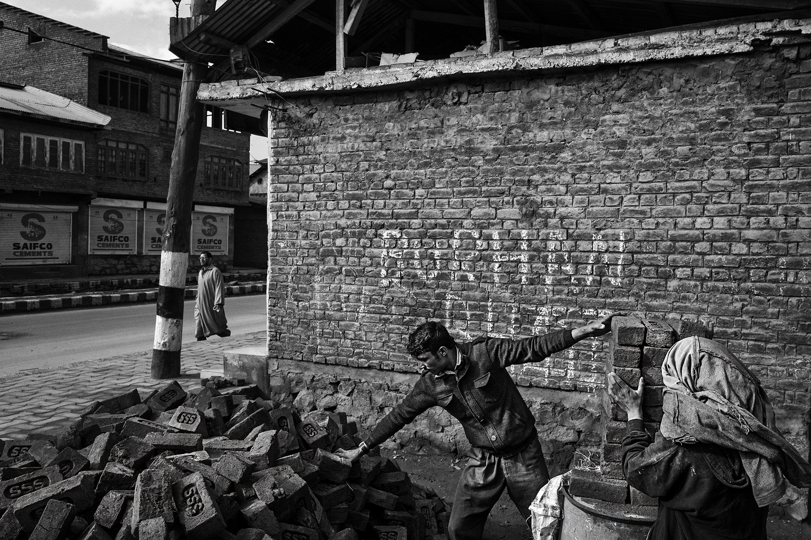
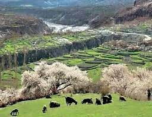

History of Kashmir

The history of Kashmir is intertwined with the history of the broader Indian subcontinent in
South Asia with influences from the surrounding regions of Central and East Asia. Historically,
Kashmir referred to only the Kashmir Valley of the western Himalayas.
[1] Today, it denotes a larger area that includes the Indian
administered union territories of Jammu and Kashmir (which consists of Jammu and the Kashmir Valley) and Ladakh,
the Pakistan-administered territories of Azad Kashmir and Gilgit-Baltistan,
and the Chinese-administered regions of Aksai Chin and the Trans-Karakoram Tract.
In the first half of the 1st millennium, the Kashmir region became an important
centre of Hinduism and later—under the Mauryas and Kushanas—of Buddhism.
Later in the ninth century, during the rule of the Karkota Dynasty
, a native tradition of Shaivism arose
.
It flourished in the seven centuries of Hindu rule,
continuing under the Utpala and the Lohara dynasties,
ending in mid-14th century.
news
information
Islamization in Kashmir began during the 13th century, accelerated under Muslim rule during the 14th and 15th
centuries,
and led to the eventual decline of the Kashmir Shaivism in Kashmir
1339, Shah Mir became the first Muslim ruler of Kashmir
inaugurating the Shah Mir dynasty. For the next five centuries, Muslim monarchs ruled Kashmir,
including the Mughal Empire, who ruled from 1586 until 1751, and the Afghan Durrani Empire,
which ruled from 1747 until 1819. That year, the Sikhs, under Ranjit Singh, annexed Kashmir
In 1846, after the Sikh defeat in the First Anglo-Sikh War
the Treaty of Lahore was signed and upon the purchase of the region from the British under the Treaty of Amritsar
the Raja of Jammu, Gulab Singh, became the new ruler of Kashmir. The rule of his descendants,
under the paramountcy (or tutelage) of the British Crown, lasted until 1947,
when the former princely state became a disputed territory, now administered by three countries:
India, Pakistan, and the People's Republic of China

Etymology
Nilamata Purana
(complied c. 500–600 CE)[6] contains accounts of Kashmir's early history. However, being a Puranic source
, it has been argued that it suffers from a degree of inconsistency and unreliability.
[7][a] Kalhana's Rajatarangini (River of Kings), all the 8000 Sanskrit verses of which were completed by 1150 CE,
chronicles the history of Kashmir's dynasties from earlier times to the 12th century.
[8][9] It relies upon traditional sources like Nilmata Purana, inscriptions, coins, monuments, and Kalhana's personal observations borne out of political experiences of his family.
[10][8] Towards the end of the work mythical explanations give way to rational and critical analyses of dramatic
events between 11th and 12th centuries,
for which Kalhana is often credited as "India's first historian".[7][8]
khyber news
gmail
